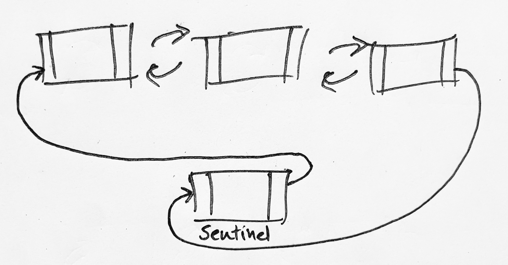

Doubly Linked Lists¶
A doubly linked list is a data structure that contains a collection of nodes which each hold a reference to the previous and next node in the list. In addition to these references the node will contain some data (or a reference to some data). The two references (or links) to the previous and next nodes are what give this data structure its name.
In python we could model a node like so:
class Node:
def __init__(self, value: Optional[any] = None):
self.prev: Optional[Self] = None
self.next: Optional[Self] = None
self.value: any = value
A node could also be modelled using a simple 3 elements list e.g. [PREV, NEXT, DATA] but in the interest of readability I will use the class based approach.
There are various ways to implement doubly linked lists, in the following text I will out line two common methods, the first uses null terminated head and tail nodes. The head represents the first node in the list and the tail the last.
Null terminated head and tail nodes¶
Fig 1. Shows a representation of a doubly linked list with null terminated head and tail nodes
With this method the node at the head of the list will never have a reference to a previous node and the node at the tail of the list will not have a reference to a next node. Armed with this knowledge we can start to implement a solution.
class DLL:
def __init__(self):
self.head: Optional[Node] = None
self.tail: Optional[Node] = None
def insert_before(self, existing_node: Node, new_node: Node):
new_node.next = existing_node
if not existing_node.prev:
self.head = new_node
else:
new_node.prev = existing_node.prev
new_node.prev.next = new_node
existing_node.prev = new_node
def insert_first(self, new_node: Node):
if not self.head:
self.head = new_node
self.tail = new_node
new_node.prev = None
new_node.next = None
else:
self.insert_before(self.head, new_node)
First we create a class with attributes for the head and tail nodes and initialise these to None.
In the code above we have implemented insert_before and insert_first methods. As this implementation starts out with head as None we have to carry out some null checking and branch accordingly. Looking at insert_first we can see that on first run head will always be None so in that case head should be set to the new node, as will tail. This looks a little odd at first, but if the list only has one node that node is indeed both the head and the tail. If we were to call insert_first with another new node head would no longer be None and the code would branch to call insert_before(self.head, new_node). The first thing to do in insert_before is to set the next reference of the new node to the existing node. Next, we have to check if the existing node has a reference to a previous node, if it doesn't we can assume it is the head of the list and as such needs to be replaced by the new node. If the existing node was not the head then we need to update the references to maintain the double link references. Although this doesn't seem like that much code, the null checking and special casing make the code considerably more complex. So, what could we do to make this code simpler....
Using a sentinel node¶

A sentinel node replaces the head and tail nodes and logically become both the start and end of the list effectivly creating a circular list.
We initialse our class with a sentinal node and have it self reference itself, with previous and next referecing the same sentinal node.
class DLLWithSentinel:
def __init__(self):
self._sentinel: Node = Node()
self._sentinel.next = self._sentinel
self._sentinel.prev = self._sentinel
def insert_before(self, existing_node: Node, new_node: Node):
new_node.next = existing_node
new_node.prev = existing_node.prev
existing_node.prev.next = new_node
existing_node.prev = new_node
def insert_first(self, new_node: Node):
self.insert_after(self._sentinel, new_node)
At this point the sentinal node is the both the head and tail so this makes logical sense and conveiniently removes any None values. This drastically simplifies the code for insert_first and insert_before and in the full code listings below this is even more apparent.
Full code for both implementations¶
(also via this gist)
from typing import Optional
from typing_extensions import Self
class Node:
def __init__(self, value: Optional[any] = None):
self.prev: Optional[Self] = None
self.next: Optional[Self] = None
self.value: any = value
class DLL:
"""
Doubly Linked List implementation using null terminators
to identify the first and last nodes.
If a node does not have a previous node,
then it is the first.
If a node does not have a next node, then it is the last.
"""
def __init__(self):
self.first: Optional[Node] = None
self.last: Optional[Node] = None
def insert_after(self, existing_node: Node, new_node: Node):
new_node.prev = existing_node
if not existing_node.next:
self.last = new_node
else:
new_node.next = existing_node.next
new_node.next.prev = new_node
existing_node.next = new_node
def insert_before(self, existing_node: Node, new_node: Node):
new_node.next = existing_node
if not existing_node.prev:
self.first = new_node
else:
new_node.prev = existing_node.prev
new_node.prev.next = new_node
existing_node.prev = new_node
def insert_first(self, new_node: Node):
if not self.first:
self.first = new_node
self.last = new_node
new_node.prev = None
new_node.next = None
else:
self.insert_before(self.first, new_node)
def insert_last(self, new_node: Node):
if not self.last:
# if there is not a `last` node then there
# is not a `first` node,
# so we can simply insert at the beginning
# self.insert_first(new_node)
else:
self.insert_after(self.last, new_node)
def remove(self, node: Node):
if not node.prev:
self.first = node.next
else:
node.prev.next = node.next
if not node.next:
self.last = node.prev
else:
node.next.prev = node.prev
def find(self, value: any, *, forwards=True, node: Optional[Node] = None) -> any:
node = self.first if node is None else node
while node:
if node.value == value:
return node
node = node.next if forwards else node.prev
class DLLWithSentinel:
"""
Doubly linked list using a sentinel node.
The use of a sentinel node removes all the null checks
and greatly simplifies the algorithms for inserting and removing nodes.
The sentinel node also joins the first and last nodes together creating
a circular list of nodes
"""
def __init__(self):
self._sentinel: Node = Node()
self._sentinel.next = self._sentinel
self._sentinel.prev = self._sentinel
@property
def first(self):
return self._sentinel.next
@property
def last(self):
return self._sentinel.prev
def insert_after(self, existing_node: Node, new_node: Node):
new_node.prev = existing_node
new_node.next = existing_node.next
existing_node.next.prev = new_node
existing_node.next = new_node
def insert_before(self, existing_node: Node, new_node: Node):
new_node.next = existing_node
new_node.prev = existing_node.prev
existing_node.prev.next = new_node
existing_node.prev = new_node
def insert_first(self, new_node: Node):
self.insert_after(self._sentinel, new_node)
def insert_last(self, new_node: Node):
self.insert_before(self._sentinel, new_node)
def remove(self, node: Node):
if node is self._sentinel:
raise Exception("sentinel node cannot be removed")
node.prev.next = node.next
node.next.prev = node.prev
def find(self, value: any, *, forwards=True, node: Optional[Node] = None) -> any:
node = self.first if node is None else node
while node != self._sentinel:
if node.value == value:
return node
node = node.next if forwards else node.prev